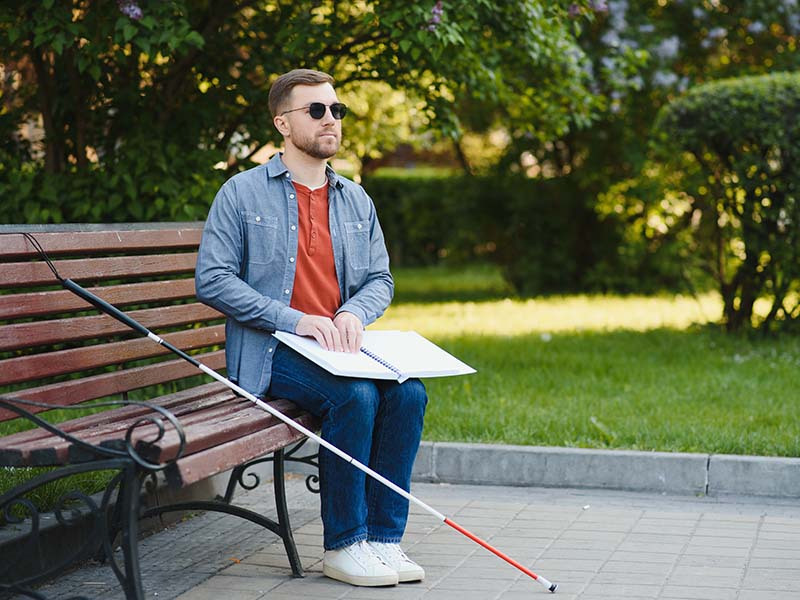

O que é?
A deficiência visual é a perda ou redução da capacidade visual em um ou ambos os olhos em caráter definitivo, que não pode ser melhorada ou corrigida com o uso de lentes, tratamento clínico ou cirúrgico. Existem critérios rígidos para definir uma deficiência. Portanto, uma pessoa com alto grau de miopia, por exemplo, não é uma pessoa com deficiência visual, uma vez que existem alternativas para correção desta limitação.
Classificações:
Existem 3 tipos de diferentes de grau de deficiência visual:
- Baixa visão (leve, moderada ou profunda): pode ser compensada com o uso de lentes de aumento e lupas com o auxílio de bengalas e de treinamentos de orientação. dificuldade em ouvir sons abaixo de 30 decibéis. Algumas vogais e consoantes podem não ser identificadas.
- Próximo à cegueira: quando a pessoa ainda é capaz de distinguir luz e sombra, mas já emprega o sistema braile para ler e escrever, utiliza recursos de voz para acessar programas de computador, locomove-se com a bengala e precisa de treinamentos de orientação e de mobilidade.
- Cegueira: o uso do Sistema Braille, da bengala e os treinamentos de orientação e de mobilidade, nesse caso, é fundamental.
A Lei da Bengala:
a Lei Federal 14.951/2024 que designa cores para a chamada “bengala longa”, usada por pessoas com cegueira e baixa visão para auxiliar na locomoção. As cores servirão para identificar o grau de deficiência visual do usuário. O texto foi sancionado sem vetos e também assinado pela ministra da Saúde, Nísia Trindade.
De acordo com o texto, a cor branca deve ser destinada às pessoas cegas. Usuários com baixa visão ou visão subnormal devem portar bengalas verdes, enquanto a vermelha e branca será reservada para pessoas surdas-cegas.
Ainda de acordo com a norma, caberá ao Sistema Único de Saúde (SUS) fornecer a bengala longa na coloração solicitada. Para isso, serão necessários trâmites administrativos para alterar a descrição dos procedimentos na tabela SUS a fim de possibilitar o fornecimento do equipamento com as diferentes cores, conforme estabelece a lei.
A avaliação da cegueira, da baixa visão ou da surdo-cegueira, quando necessária, deve ser realizada por equipe multiprofissional e interdisciplinar. Também cabe ao poder público divulgar o significado da coloração da bengala longa e os direitos dos usuários.
Dicas de Relacionamento e Inclusão da Pessoa com Deficiência Visual:
- Use naturalmente termos como “cego”, “ver” e “olhar”. Os cegos também os usam;
- Ao conversar com uma pessoa cega, não é necessário falar mais alto, a menos que ela o solicite;
- Se for auxiliar uma pessoa cega, pergunte antes se ela precisa de ajuda e de que forma;
- Ao conduzir uma pessoa cega, ofereça seu braço (cotovelo) para que ela segure. Não a agarre, nem a puxe pelo braço ou pela bengala;
- Ao explicar a direção para um cego, indique distância e pontos de referência com clareza: “tantos metros à direita, à esquerda”, “para frente ou para trás”. Evite termos como: “por aqui” e “por ali”;
- Informe sobre os obstáculos existentes, como degraus, desníveis e outros;
- Quando houver necessidade de passar por lugares estreitos, como portas e corredores, posicione seu braço para trás, de modo que a pessoa cega possa segui-lo;
- Se observar aspectos inadequados quanto à aparência da pessoa cega (zíper aberto, roupa pelo avesso, maquiagem borrada, etc) avise-a discretamente a respeito;
- Se conviver com uma pessoa cega, nunca deixe uma porta entreaberta. As portas devem estar totalmente abertas ou completamente fechadas. Conserve os corredores livres de obstáculos. Avise-as se a mobília for mudada de lugar;
- Sempre que se ausentar do local, informe à pessoa, caso contrário ela ficará falando sozinha;
- O cão-guia nunca deve ser distraído de seu dever. Evite brincar com o cão, pois a segurança da pessoa pode depender do alerta e da concentração do animal;
O computador pode possibilitar à pessoa cega escrever e conferir os textos, ler jornais e revistas, via internet ou livro digitalizado, usando programas específicos (DosVox, Virtual Vision, Jaws, NVDA, por exemplo) os quais reproduzem em áudio as informações escritas na tela. Os programas de acessibilidade não reproduzem imagens. Diante disso, torna-se interessante que, ao enviar imagens para pessoas com deficiência, seja encaminhado uma breve descrição das mesmas.
Fontes
- Gov.br - Lei da Bengala
- Deficiência visual - Governo do Estado do Paraná
- Quadro - Alfabeto, Números e Pontuação em Braile